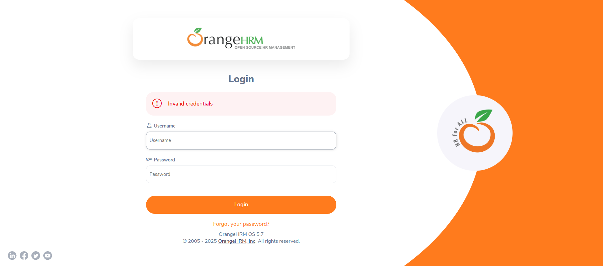
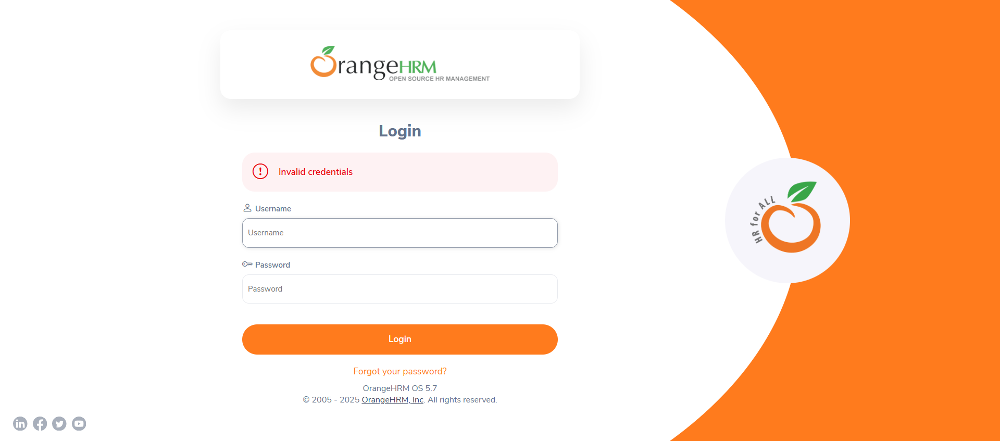

Started
Nov 3, 2025 08:36:57 pm
Ended
Nov 3, 2025 08:43:07 pm
Features Passed
1
Features Failed
3
Features
Scenarios
Steps
Timeline
Tags
| Name | Passed | Failed | Skipped | Others | Passed % |
|---|---|---|---|---|---|
| @recherche | 0 | 15 | 0 | 0 | 0% |
| @deconnexion | 0 | 1 | 0 | 0 | 0% |
| @connexionValide | 1 | 0 | 0 | 0 | 100% |
| @rechercheByUserStatus | 0 | 3 | 0 | 0 | 0% |
| @add | 2 | 0 | 0 | 0 | 100% |
| @connexion | 1 | 7 | 0 | 0 | 12.5% |
| @rechercheAll | 0 | 4 | 0 | 0 | 0% |
| @addUser | 2 | 0 | 0 | 0 | 100% |
| @rechercheByUsername | 0 | 2 | 0 | 0 | 0% |
| @connexionInvalide | 0 | 7 | 0 | 0 | 0% |
| @rechercheByEmployeName | 0 | 3 | 0 | 0 | 0% |
| @logout | 0 | 1 | 0 | 0 | 0% |
| @rechercheByUserRole | 0 | 3 | 0 | 0 | 0% |
System/Environment
| Name | Value |
|---|---|
| browser | Chrome |
| project | orangeHRM |
| OS | windows 11 |
-
ajout d'utilisateur
20:36:58 / 00:00:32:184 Pass
ajout d'utilisateur
11.03.2025 20:36:58 11.03.2025 20:37:30 00:00:32:184 · #test-id=1En tant qu'admin je vais ajouter un nouveau utilisateurPassajout d'un utilisateurPassajout d'un utilisateurGiven je me connecte sur l'applicationWhen je saisis le username "Admin"And je saisis le password "Admin123++*/"And je clique sur le bouton loginThen je me redirige vers la page d'acceuil et "Dashboard" s'afficheWhen je click sur le bouton adminAnd je click sur le bouton addAnd je selectionne un roleAnd je saisis l'employe name existant "benhmidar benhmidar"And je selectionne un statusAnd je saisis le nouveau username "rihabbn"And je saisis le nouveau password "123Rihab/"And je confirme le password "123Rihab/"And je click sur le bouton saveThen je saisis le username souaite "rihabbn"And je click sur le bouton rechercheAnd je verifie les usernames affiches sur le tableau "rihabbn"When je clique sur le menu deroulant du profilAnd je click sur le bouton logoutThen je dois être redirigé vers la page de connexion et "Login" doit s'afficher -
Authentification
20:37:30 / 00:03:00:831 Fail
Authentification
11.03.2025 20:37:30 11.03.2025 20:40:31 00:03:00:831 · #test-id=26en tant qu'un administrateur je veux m'authentifier sur l'application Orange HrmPassauthentification avec des identifiants validesGiven je me connecte sur l'applicationWhen je saisis le username "Admin"And je saisis le password "Admin123++*/"And je clique sur le bouton loginThen je me redirige vers la page d'acceuil et "Dashboard" s'afficheWhen je clique sur le menu deroulant du profilAnd je click sur le bouton logoutThen je dois être redirigé vers la page de connexion et "Login" doit s'afficherFailAuthentification avec des identifiants non validesFailAuthentification avec des identifiants non validesGiven je me connecte sur l'applicationWhen je saisis le username "Rihab"And je saisis le password "Admin123++*/"And je clique sur le bouton loginThen je verifie le message d'erreur affiche "Invalid credentials"When je clique sur le menu deroulant du profilAnd je click sur le bouton logoutStep skippedThen je dois être redirigé vers la page de connexion et "Login" doit s'afficherStep skippedutils.Setup.embedScreenshot(io.cucumber.java.Scenario)Authentification avec des identifiants non valides FailAuthentification avec des identifiants non validesGiven je me connecte sur l'applicationWhen je saisis le username "Admin"And je saisis le password "admin12"And je clique sur le bouton loginThen je verifie le message d'erreur affiche "Invalid credentials"When je clique sur le menu deroulant du profilAnd je click sur le bouton logoutStep skippedThen je dois être redirigé vers la page de connexion et "Login" doit s'afficherStep skippedutils.Setup.embedScreenshot(io.cucumber.java.Scenario)Authentification avec des identifiants non validesFailAuthentification avec des identifiants non validesGiven je me connecte sur l'applicationWhen je saisis le username "Admin"And je saisis le password ""And je clique sur le bouton loginThen je verifie le message d'erreur affiche "Required"When je clique sur le menu deroulant du profilAnd je click sur le bouton logoutStep skippedThen je dois être redirigé vers la page de connexion et "Login" doit s'afficherStep skippedutils.Setup.embedScreenshot(io.cucumber.java.Scenario)FailAuthentification avec des identifiants non validesGiven je me connecte sur l'applicationWhen je saisis le username ""And je saisis le password "Admin123++*/"And je clique sur le bouton loginThen je verifie le message d'erreur affiche "Required"When je clique sur le menu deroulant du profilAnd je click sur le bouton logoutStep skippedThen je dois être redirigé vers la page de connexion et "Login" doit s'afficherStep skippedutils.Setup.embedScreenshot(io.cucumber.java.Scenario)FailAuthentification avec des identifiants non validesGiven je me connecte sur l'applicationWhen je saisis le username "admin"And je saisis le password "Admin1"And je clique sur le bouton loginThen je verifie le message d'erreur affiche "Invalid credentials"When je clique sur le menu deroulant du profilAnd je click sur le bouton logoutStep skippedThen je dois être redirigé vers la page de connexion et "Login" doit s'afficherStep skippedutils.Setup.embedScreenshot(io.cucumber.java.Scenario)FailAuthentification avec des identifiants non validesGiven je me connecte sur l'applicationWhen je saisis le username ""And je saisis le password ""Step skippedAnd je clique sur le bouton loginStep skippedThen je verifie le message d'erreur affiche "Required"Step skippedWhen je clique sur le menu deroulant du profilStep skippedAnd je click sur le bouton logoutStep skippedThen je dois être redirigé vers la page de connexion et "Login" doit s'afficherStep skippedutils.Setup.embedScreenshot(io.cucumber.java.Scenario)
FailAuthentification avec des identifiants non validesGiven je me connecte sur l'applicationWhen je saisis le username "Admin"And je saisis le password "admin12"And je clique sur le bouton loginThen je verifie le message d'erreur affiche "Invalid credentials"When je clique sur le menu deroulant du profilAnd je click sur le bouton logoutStep skippedThen je dois être redirigé vers la page de connexion et "Login" doit s'afficherStep skippedutils.Setup.embedScreenshot(io.cucumber.java.Scenario)Authentification avec des identifiants non validesFailAuthentification avec des identifiants non validesGiven je me connecte sur l'applicationWhen je saisis le username "Admin"And je saisis le password ""And je clique sur le bouton loginThen je verifie le message d'erreur affiche "Required"When je clique sur le menu deroulant du profilAnd je click sur le bouton logoutStep skippedThen je dois être redirigé vers la page de connexion et "Login" doit s'afficherStep skippedutils.Setup.embedScreenshot(io.cucumber.java.Scenario)FailAuthentification avec des identifiants non validesGiven je me connecte sur l'applicationWhen je saisis le username ""And je saisis le password "Admin123++*/"And je clique sur le bouton loginThen je verifie le message d'erreur affiche "Required"When je clique sur le menu deroulant du profilAnd je click sur le bouton logoutStep skippedThen je dois être redirigé vers la page de connexion et "Login" doit s'afficherStep skippedutils.Setup.embedScreenshot(io.cucumber.java.Scenario)FailAuthentification avec des identifiants non validesGiven je me connecte sur l'applicationWhen je saisis le username "admin"And je saisis le password "Admin1"And je clique sur le bouton loginThen je verifie le message d'erreur affiche "Invalid credentials"When je clique sur le menu deroulant du profilAnd je click sur le bouton logoutStep skippedThen je dois être redirigé vers la page de connexion et "Login" doit s'afficherStep skippedutils.Setup.embedScreenshot(io.cucumber.java.Scenario)FailAuthentification avec des identifiants non validesGiven je me connecte sur l'applicationWhen je saisis le username ""And je saisis le password ""Step skippedAnd je clique sur le bouton loginStep skippedThen je verifie le message d'erreur affiche "Required"Step skippedWhen je clique sur le menu deroulant du profilStep skippedAnd je click sur le bouton logoutStep skippedThen je dois être redirigé vers la page de connexion et "Login" doit s'afficherStep skippedutils.Setup.embedScreenshot(io.cucumber.java.Scenario) -
deconnecter
20:40:31 / 00:00:15:403 Fail
deconnecter
11.03.2025 20:40:31 11.03.2025 20:40:46 00:00:15:403 · #test-id=105En tant qu'utilisateur authentifié Je veux me déconnecterFailSuccessful logoutGiven je me connecte sur l'applicationWhen je saisis le username "Admin"And je saisis le password "Admin123++*/"Step skippedAnd je clique sur le bouton loginStep skippedThen je me redirige vers la page d'acceuil et "Dashboard" s'afficheStep skippedWhen je clique sur le menu deroulant du profilStep skippedAnd je click sur le bouton logoutStep skippedThen je dois être redirigé vers la page de connexion et "Login" doit s'afficherStep skippedutils.Setup.embedScreenshot(io.cucumber.java.Scenario) -
Recherche
20:40:46 / 00:02:20:558 Fail
Recherche
11.03.2025 20:40:46 11.03.2025 20:43:07 00:02:20:558 · #test-id=117En tant qu'admin je souhaite effectue une recherche d'un utilisateurFailrecherche par tous les filtresFailrecherche par tous les filtresGiven je me connecte sur l'applicationWhen je saisis le username "Admin"And je saisis le password "Admin123++*/"Step skippedAnd je clique sur le bouton loginStep skippedThen je me redirige vers la page d'acceuil et "Dashboard" s'afficheStep skippedWhen je click sur le bouton adminStep skippedAnd je saisis le username souaite "Admin"Step skippedAnd je saisis le role souaite "Admin"Step skippedAnd je saisis le l'employe name souaite "benhmidar benhmidar"Step skippedAnd je saisis le status souhaite "Enabled"Step skippedAnd je click sur le bouton rechercheStep skippedThen je verifie les usernames affiches sur le tableau "Admin"Step skippedAnd je verifie les role affiches sur le tableau "Admin"Step skippedAnd je verifie le employe name affiche sur le tableau "benhmidar benhmidar"Step skippedAnd je verifie le status affiche sur le tableau "Enabled"Step skippedutils.Setup.embedScreenshot(io.cucumber.java.Scenario)Failrecherche par tous les filtresGiven je me connecte sur l'applicationWhen je saisis le username "Admin"And je saisis le password "Admin123++*/"Step skippedAnd je clique sur le bouton loginStep skippedThen je me redirige vers la page d'acceuil et "Dashboard" s'afficheStep skippedWhen je click sur le bouton adminStep skippedAnd je saisis le username souaite "safouankraiem"Step skippedAnd je saisis le role souaite "Admin"Step skippedAnd je saisis le l'employe name souaite "benhmidar benhmidar"Step skippedAnd je saisis le status souhaite "Disabled"Step skippedAnd je click sur le bouton rechercheStep skippedThen je verifie les usernames affiches sur le tableau "safouankraiem"Step skippedAnd je verifie les role affiches sur le tableau "Admin"Step skippedAnd je verifie le employe name affiche sur le tableau "benhmidar benhmidar"Step skippedAnd je verifie le status affiche sur le tableau "Disabled"Step skippedutils.Setup.embedScreenshot(io.cucumber.java.Scenario)Failrecherche par tous les filtresGiven je me connecte sur l'applicationWhen je saisis le username "Admin"And je saisis le password "Admin123++*/"Step skippedAnd je clique sur le bouton loginStep skippedThen je me redirige vers la page d'acceuil et "Dashboard" s'afficheStep skippedWhen je click sur le bouton adminStep skippedAnd je saisis le username souaite "testing"Step skippedAnd je saisis le role souaite "ESS"Step skippedAnd je saisis le l'employe name souaite "benhmidar benhmidar"Step skippedAnd je saisis le status souhaite "Enabled"Step skippedAnd je click sur le bouton rechercheStep skippedThen je verifie les usernames affiches sur le tableau "testing"Step skippedAnd je verifie les role affiches sur le tableau "ESS"Step skippedAnd je verifie le employe name affiche sur le tableau "benhmidar benhmidar"Step skippedAnd je verifie le status affiche sur le tableau "Enabled"Step skippedutils.Setup.embedScreenshot(io.cucumber.java.Scenario)Failrecherche par employe nameFailrecherche par employe nameGiven je me connecte sur l'applicationWhen je saisis le username "Admin"And je saisis le password "Admin123++*/"Step skippedAnd je clique sur le bouton loginStep skippedThen je me redirige vers la page d'acceuil et "Dashboard" s'afficheStep skippedWhen je click sur le bouton adminStep skippedAnd je saisis le l'employe name souaite "benhmidar benhmidar"Step skippedAnd je click sur le bouton rechercheStep skippedThen je verifie le employe name affiche sur le tableau "benhmidar benhmidar"Step skippedWhen je clique sur le menu deroulant du profilStep skippedAnd je click sur le bouton logoutStep skippedThen je dois être redirigé vers la page de connexion et "Login" doit s'afficherStep skippedutils.Setup.embedScreenshot(io.cucumber.java.Scenario)Failrecherche par employe nameGiven je me connecte sur l'applicationWhen je saisis le username "Admin"And je saisis le password "Admin123++*/"Step skippedAnd je clique sur le bouton loginStep skippedThen je me redirige vers la page d'acceuil et "Dashboard" s'afficheStep skippedWhen je click sur le bouton adminStep skippedAnd je saisis le l'employe name souaite "rihab"Step skippedAnd je click sur le bouton rechercheStep skippedThen je verifie le employe name affiche sur le tableau "Invalid"Step skippedWhen je clique sur le menu deroulant du profilStep skippedAnd je click sur le bouton logoutStep skippedThen je dois être redirigé vers la page de connexion et "Login" doit s'afficherStep skippedutils.Setup.embedScreenshot(io.cucumber.java.Scenario)Failrecherche par user statusFailrecherche par user statusGiven je me connecte sur l'applicationWhen je saisis le username "Admin"And je saisis le password "Admin123++*/"Step skippedAnd je clique sur le bouton loginStep skippedThen je me redirige vers la page d'acceuil et "Dashboard" s'afficheStep skippedWhen je click sur le bouton adminStep skippedAnd je saisis le status souhaite "Enabled"Step skippedAnd je click sur le bouton rechercheStep skippedThen je verifie le status affiche sur le tableau "Enabled"Step skippedWhen je clique sur le menu deroulant du profilStep skippedAnd je click sur le bouton logoutStep skippedThen je dois être redirigé vers la page de connexion et "Login" doit s'afficherStep skippedutils.Setup.embedScreenshot(io.cucumber.java.Scenario)Failrecherche par user statusGiven je me connecte sur l'applicationWhen je saisis le username "Admin"And je saisis le password "Admin123++*/"Step skippedAnd je clique sur le bouton loginStep skippedThen je me redirige vers la page d'acceuil et "Dashboard" s'afficheStep skippedWhen je click sur le bouton adminStep skippedAnd je saisis le status souhaite "Disabled"Step skippedAnd je click sur le bouton rechercheStep skippedThen je verifie le status affiche sur le tableau "Disabled"Step skippedWhen je clique sur le menu deroulant du profilStep skippedAnd je click sur le bouton logoutStep skippedThen je dois être redirigé vers la page de connexion et "Login" doit s'afficherStep skippedutils.Setup.embedScreenshot(io.cucumber.java.Scenario)Failrecherche par usernameFailrecherche par usernameGiven je me connecte sur l'applicationWhen je saisis le username "Admin"And je saisis le password "Admin123++*/"Step skippedAnd je clique sur le bouton loginStep skippedThen je me redirige vers la page d'acceuil et "Dashboard" s'afficheStep skippedWhen je click sur le bouton adminStep skippedAnd je saisis le username souaite "Admin"Step skippedAnd je click sur le bouton rechercheStep skippedThen je verifie les usernames affiches sur le tableau "Admin"Step skippedWhen je clique sur le menu deroulant du profilStep skippedAnd je click sur le bouton logoutStep skippedThen je dois être redirigé vers la page de connexion et "Login" doit s'afficherStep skippedutils.Setup.embedScreenshot(io.cucumber.java.Scenario)Failrecherche par user roleFailrecherche par user roleGiven je me connecte sur l'applicationWhen je saisis le username "Admin"And je saisis le password "Admin123++*/"Step skippedAnd je clique sur le bouton loginStep skippedThen je me redirige vers la page d'acceuil et "Dashboard" s'afficheStep skippedWhen je click sur le bouton adminStep skippedAnd je saisis le role souaite "ESS"Step skippedAnd je click sur le bouton rechercheStep skippedThen je verifie les role affiches sur le tableau "ESS"Step skippedWhen je clique sur le menu deroulant du profilStep skippedAnd je click sur le bouton logoutStep skippedThen je dois être redirigé vers la page de connexion et "Login" doit s'afficherStep skippedutils.Setup.embedScreenshot(io.cucumber.java.Scenario)Failrecherche par user roleGiven je me connecte sur l'applicationWhen je saisis le username "Admin"And je saisis le password "Admin123++*/"Step skippedAnd je clique sur le bouton loginStep skippedThen je me redirige vers la page d'acceuil et "Dashboard" s'afficheStep skippedWhen je click sur le bouton adminStep skippedAnd je saisis le role souaite "Admin"Step skippedAnd je click sur le bouton rechercheStep skippedThen je verifie les role affiches sur le tableau "Admin"Step skippedWhen je clique sur le menu deroulant du profilStep skippedAnd je click sur le bouton logoutStep skippedThen je dois être redirigé vers la page de connexion et "Login" doit s'afficherStep skippedutils.Setup.embedScreenshot(io.cucumber.java.Scenario)
-
@recherche
15 tests
@recherche
15 failedStatus Timestamp TestName Fail 20:40:46 pm recherche par tous les filtres Recherche.recherche par tous les filtresFail 20:40:46 pm recherche par tous les filtres Recherche.recherche par tous les filtresFail 20:41:00 pm recherche par tous les filtres Recherche.recherche par tous les filtresFail 20:41:14 pm recherche par tous les filtres Recherche.recherche par tous les filtresFail 20:41:28 pm recherche par employe name Recherche.recherche par employe nameFail 20:41:28 pm recherche par employe name Recherche.recherche par employe nameFail 20:41:47 pm recherche par employe name Recherche.recherche par employe nameFail 20:42:03 pm recherche par user status Recherche.recherche par user statusFail 20:42:03 pm recherche par user status Recherche.recherche par user statusFail 20:42:16 pm recherche par user status Recherche.recherche par user statusFail 20:42:29 pm recherche par username Recherche.recherche par usernameFail 20:42:29 pm recherche par username Recherche.recherche par usernameFail 20:42:41 pm recherche par user role Recherche.recherche par user roleFail 20:42:41 pm recherche par user role Recherche.recherche par user roleFail 20:42:55 pm recherche par user role Recherche.recherche par user role -
@deconnexion
1 tests
@deconnexion
1 failedStatus Timestamp TestName Fail 20:40:31 pm Successful logout deconnecter.Successful logout -
@connexionValide
1 tests
@connexionValide
1 passedStatus Timestamp TestName Pass 20:37:30 pm authentification avec des identifiants valides Authentification.authentification avec des identifiants valides -
@rechercheByUserStatus
3 tests
@rechercheByUserStatus
3 failedStatus Timestamp TestName Fail 20:42:03 pm recherche par user status Recherche.recherche par user statusFail 20:42:03 pm recherche par user status Recherche.recherche par user statusFail 20:42:16 pm recherche par user status Recherche.recherche par user status -
@add
2 tests
@add
2 passedStatus Timestamp TestName Pass 20:36:58 pm ajout d'un utilisateur ajout d'utilisateur.ajout d'un utilisateurPass 20:36:58 pm ajout d'un utilisateur ajout d'utilisateur.ajout d'un utilisateur -
@connexion
8 tests
@connexion
1 passed 7 failedStatus Timestamp TestName Pass 20:37:30 pm authentification avec des identifiants valides Authentification.authentification avec des identifiants validesFail 20:37:49 pm Authentification avec des identifiants non valides Authentification.Authentification avec des identifiants non validesFail 20:37:49 pm Authentification avec des identifiants non valides Authentification.Authentification avec des identifiants non validesFail 20:38:31 pm Authentification avec des identifiants non valides Authentification.Authentification avec des identifiants non validesFail 20:39:04 pm Authentification avec des identifiants non valides Authentification.Authentification avec des identifiants non validesFail 20:39:33 pm Authentification avec des identifiants non valides Authentification.Authentification avec des identifiants non validesFail 20:39:54 pm Authentification avec des identifiants non valides Authentification.Authentification avec des identifiants non validesFail 20:40:19 pm Authentification avec des identifiants non valides Authentification.Authentification avec des identifiants non valides -
@rechercheAll
4 tests
@rechercheAll
4 failedStatus Timestamp TestName Fail 20:40:46 pm recherche par tous les filtres Recherche.recherche par tous les filtresFail 20:40:46 pm recherche par tous les filtres Recherche.recherche par tous les filtresFail 20:41:00 pm recherche par tous les filtres Recherche.recherche par tous les filtresFail 20:41:14 pm recherche par tous les filtres Recherche.recherche par tous les filtres -
@addUser
2 tests
@addUser
2 passedStatus Timestamp TestName Pass 20:36:58 pm ajout d'un utilisateur ajout d'utilisateur.ajout d'un utilisateurPass 20:36:58 pm ajout d'un utilisateur ajout d'utilisateur.ajout d'un utilisateur -
@rechercheByUsername
2 tests
@rechercheByUsername
2 failedStatus Timestamp TestName Fail 20:42:29 pm recherche par username Recherche.recherche par usernameFail 20:42:29 pm recherche par username Recherche.recherche par username -
@connexionInvalide
7 tests
@connexionInvalide
7 failedStatus Timestamp TestName Fail 20:37:49 pm Authentification avec des identifiants non valides Authentification.Authentification avec des identifiants non validesFail 20:37:49 pm Authentification avec des identifiants non valides Authentification.Authentification avec des identifiants non validesFail 20:38:31 pm Authentification avec des identifiants non valides Authentification.Authentification avec des identifiants non validesFail 20:39:04 pm Authentification avec des identifiants non valides Authentification.Authentification avec des identifiants non validesFail 20:39:33 pm Authentification avec des identifiants non valides Authentification.Authentification avec des identifiants non validesFail 20:39:54 pm Authentification avec des identifiants non valides Authentification.Authentification avec des identifiants non validesFail 20:40:19 pm Authentification avec des identifiants non valides Authentification.Authentification avec des identifiants non valides -
@rechercheByEmployeName
3 tests
@rechercheByEmployeName
3 failedStatus Timestamp TestName Fail 20:41:28 pm recherche par employe name Recherche.recherche par employe nameFail 20:41:28 pm recherche par employe name Recherche.recherche par employe nameFail 20:41:47 pm recherche par employe name Recherche.recherche par employe name -
@logout
1 tests
@logout
1 failedStatus Timestamp TestName Fail 20:40:31 pm Successful logout deconnecter.Successful logout -
@rechercheByUserRole
3 tests
@rechercheByUserRole
3 failedStatus Timestamp TestName Fail 20:42:41 pm recherche par user role Recherche.recherche par user roleFail 20:42:41 pm recherche par user role Recherche.recherche par user roleFail 20:42:55 pm recherche par user role Recherche.recherche par user role
-
org.openqa.selenium.NoSuchSessionException
4 tests
org.openqa.selenium.NoSuchSessionException
4 failedStatus Timestamp TestName Fail 20:39:42 pm When je clique sur le menu deroulant du profil Authentification.Authentification avec des identifiants non valides.When je clique sur le menu deroulant du profilFail 20:39:54 pm utils.Setup.embedScreenshot(io.cucumber.java.Scenario) Authentification.Authentification avec des identifiants non valides.utils.Setup.embedScreenshot(io.cucumber.java.Scenario)Fail 20:40:06 pm When je clique sur le menu deroulant du profil Authentification.Authentification avec des identifiants non valides.When je clique sur le menu deroulant du profilFail 20:40:18 pm utils.Setup.embedScreenshot(io.cucumber.java.Scenario) Authentification.Authentification avec des identifiants non valides.utils.Setup.embedScreenshot(io.cucumber.java.Scenario) -
org.openqa.selenium.NoSuchWindowException
13 tests
org.openqa.selenium.NoSuchWindowException
13 failedStatus Timestamp TestName Fail 20:39:33 pm utils.Setup.embedScreenshot(io.cucumber.java.Scenario) Authentification.Authentification avec des identifiants non valides.utils.Setup.embedScreenshot(io.cucumber.java.Scenario)Fail 20:40:31 pm utils.Setup.embedScreenshot(io.cucumber.java.Scenario) Authentification.Authentification avec des identifiants non valides.utils.Setup.embedScreenshot(io.cucumber.java.Scenario)Fail 20:40:46 pm utils.Setup.embedScreenshot(io.cucumber.java.Scenario) deconnecter.Successful logout.utils.Setup.embedScreenshot(io.cucumber.java.Scenario)Fail 20:41:00 pm utils.Setup.embedScreenshot(io.cucumber.java.Scenario) Recherche.recherche par tous les filtres.utils.Setup.embedScreenshot(io.cucumber.java.Scenario)Fail 20:41:14 pm utils.Setup.embedScreenshot(io.cucumber.java.Scenario) Recherche.recherche par tous les filtres.utils.Setup.embedScreenshot(io.cucumber.java.Scenario)Fail 20:41:28 pm utils.Setup.embedScreenshot(io.cucumber.java.Scenario) Recherche.recherche par tous les filtres.utils.Setup.embedScreenshot(io.cucumber.java.Scenario)Fail 20:41:47 pm utils.Setup.embedScreenshot(io.cucumber.java.Scenario) Recherche.recherche par employe name.utils.Setup.embedScreenshot(io.cucumber.java.Scenario)Fail 20:42:03 pm utils.Setup.embedScreenshot(io.cucumber.java.Scenario) Recherche.recherche par employe name.utils.Setup.embedScreenshot(io.cucumber.java.Scenario)Fail 20:42:16 pm utils.Setup.embedScreenshot(io.cucumber.java.Scenario) Recherche.recherche par user status.utils.Setup.embedScreenshot(io.cucumber.java.Scenario)Fail 20:42:29 pm utils.Setup.embedScreenshot(io.cucumber.java.Scenario) Recherche.recherche par user status.utils.Setup.embedScreenshot(io.cucumber.java.Scenario)Fail 20:42:41 pm utils.Setup.embedScreenshot(io.cucumber.java.Scenario) Recherche.recherche par username.utils.Setup.embedScreenshot(io.cucumber.java.Scenario)Fail 20:42:55 pm utils.Setup.embedScreenshot(io.cucumber.java.Scenario) Recherche.recherche par user role.utils.Setup.embedScreenshot(io.cucumber.java.Scenario)Fail 20:43:07 pm utils.Setup.embedScreenshot(io.cucumber.java.Scenario) Recherche.recherche par user role.utils.Setup.embedScreenshot(io.cucumber.java.Scenario) -
org.openqa.selenium.TimeoutException
15 tests
org.openqa.selenium.TimeoutException
15 failedStatus Timestamp TestName Fail 20:38:10 pm When je clique sur le menu deroulant du profil Authentification.Authentification avec des identifiants non valides.When je clique sur le menu deroulant du profilFail 20:38:43 pm When je clique sur le menu deroulant du profil Authentification.Authentification avec des identifiants non valides.When je clique sur le menu deroulant du profilFail 20:39:13 pm When je clique sur le menu deroulant du profil Authentification.Authentification avec des identifiants non valides.When je clique sur le menu deroulant du profilFail 20:40:21 pm When je saisis le username "" Authentification.Authentification avec des identifiants non valides.When je saisis le username ""Fail 20:40:36 pm When je saisis le username "Admin" deconnecter.Successful logout.When je saisis le username "Admin"Fail 20:40:50 pm When je saisis le username "Admin" Recherche.recherche par tous les filtres.When je saisis le username "Admin"Fail 20:41:04 pm When je saisis le username "Admin" Recherche.recherche par tous les filtres.When je saisis le username "Admin"Fail 20:41:18 pm When je saisis le username "Admin" Recherche.recherche par tous les filtres.When je saisis le username "Admin"Fail 20:41:37 pm When je saisis le username "Admin" Recherche.recherche par employe name.When je saisis le username "Admin"Fail 20:41:53 pm When je saisis le username "Admin" Recherche.recherche par employe name.When je saisis le username "Admin"Fail 20:42:05 pm When je saisis le username "Admin" Recherche.recherche par user status.When je saisis le username "Admin"Fail 20:42:19 pm When je saisis le username "Admin" Recherche.recherche par user status.When je saisis le username "Admin"Fail 20:42:31 pm When je saisis le username "Admin" Recherche.recherche par username.When je saisis le username "Admin"Fail 20:42:44 pm When je saisis le username "Admin" Recherche.recherche par user role.When je saisis le username "Admin"Fail 20:42:57 pm When je saisis le username "Admin" Recherche.recherche par user role.When je saisis le username "Admin"